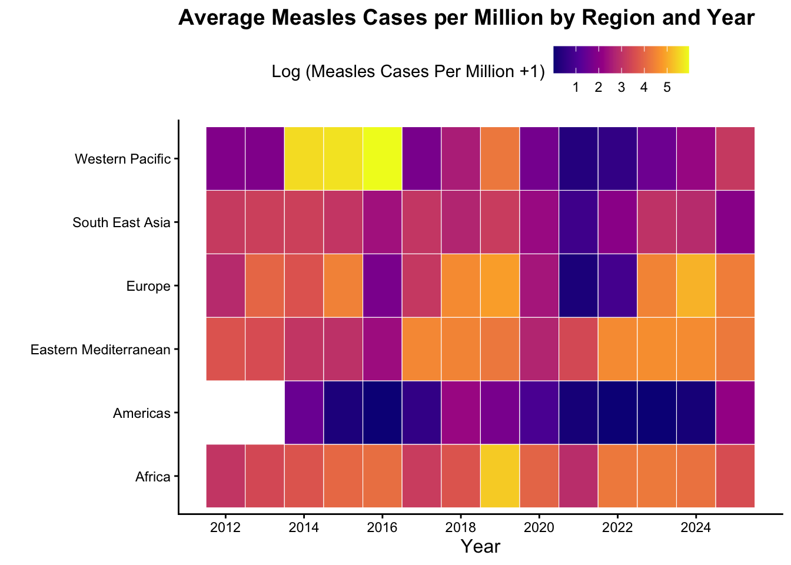

Code
# load libraries
library(tidyverse)
library(ggridges)
library(ggrepel)
library(tidyverse)
library(car)
library(pscl)
library(gt)
library(broom)
library(MASS)# load libraries
library(tidyverse)
library(ggridges)
library(ggrepel)
library(tidyverse)
library(car)
library(pscl)
library(gt)
library(broom)
library(MASS)Measles is a highly contagious viral respiratory disease that continues to affect millions of people worldwide each year, despite major scientific advancements and the widespread availability of the MCV1 vaccine. We aim to explore the socioeconomic and geographic factors that may influence measles infection rates. By examining these patterns, we hope to better understand regional disparities and identify populations that are at higher risk.
What region of the world is affected most severely by Measles annually?
What socioeconomic factors have an effect on Measles infection rate?
a) Are these socioeconomic factors correlated with vaccine coverage rate?
Data Description:
The original measles data were obtained from the WHO Provisional Monthly Measles and Rubella Dataset on June 12, 2025, and accessed through the tidytuesdayR package via the tidytuesday repository organized by Jen Richmond and Jon Harmon. Two datasets were provided by the package: cases_year and cases_month, each capturing measles incidence at different levels of time. For instance, the cases_year dataset records data with country-year as the observational unit (e.g. Algeria, 2012), while the cases_month dataset records data with country-year-month (Algeria, January 2012). Together, these datasets cover 194 countries over multiple years and months.
The data originate from the WHO’s global surveillance and national reporting systems. Although both datasets provide information on measles and rubella cases, this analysis focuses exclusively on measles cases. Despite the availability of effective vaccines, measles-related deaths continue to affect countries worldwide, affecting mainly unvaccinated children. Obtaining this data can help us understand trends in measles incidence and the factors that contribute to regions of elevated risk. Such insights are critical for informing public health strategies and implementing changes aimed at reducing the spread of measles.
Sources:
Data Description:
Country-level demographic data was accessed via the Rest Countries API, an open-source database maintained by a volunteer community and updated via pull request on Gitlab. This API is updated irregularly due to the open-source nature. These data contain current information about countries such as population, Gini coefficient, land borders, time zone, regional bloc, human development index, and more. Although the data includes a population density variable, it is a fixed value based on the current population at the time of an update. As a result, we innstead opted to create a population density variable. We used the total land area provided in the API (assuming it goes unchanged) and used the annual population from the WHO data to calculate population density.
Source:
Data Description:
Source:
Data Description:
The World Health Organization collected global data from 194 countries on measles-containing vaccine first-dose (MCV1) coverage among one year olds. The data spans from 2000 to 2024 and is calculated by dividing the total number of vaccinations administered by the number of children in the target population, which is often estimated using census projections. Anyone who is not protected against measles remains at risk, and according to the CDC, two doses are recommended for the strongest protection. Immunization plays an important role in reducing deaths among children under five.
Sources:
WHO: World Health Organization (Global Health Observatory)
CDC: Centers for Disease Control and Prevention
# read in file
mcv <- read_csv(here::here("data", "mcv1.csv"))
# recode values
mcv <- mcv |>
dplyr::select(SpatialDimValueCode, Period, Value) |>
rename("Country Code" = SpatialDimValueCode,
"MCV1 Coverage" = Value,
"MCV1 Year" = Period) measles <- read_csv(here::here("report", "measles_df.csv"))# grab label data
label_data <- measles |>
group_by(Region, Year) |>
summarise(mean_coverage = mean(`MCV1 Coverage`, na.rm = TRUE),
.groups = "drop") |>
drop_na() |>
group_by(Region) |>
slice_max(Year) |>
arrange(mean_coverage)
# make plot
mcv1_plot <- measles |>
group_by(Region, Year) |>
summarise(mean_coverage = mean(`MCV1 Coverage`, na.rm = TRUE),
.groups = "drop") |>
ggplot(aes(x = Year,
y = mean_coverage,
color = Region)) +
geom_line(linewidth = 1) +
geom_point() +
# labels
labs(title = "Average MCV1 Coverage for 1 Year Olds Across Time and Region",
subtitle = "Source: WHO",
y = "",
x = "Year") +
# unique colors
scale_color_manual(values = c("Africa" = "#d35e7f",
"Americas" = "#9fc7b9",
"Eastern Mediterranean" = "#a999eb",
"Europe" = "#9bcdef",
"South East Asia" = "#ff9d60",
"Western Pacific" = "#d4a9ce")) +
scale_fill_manual(values = c("Africa" = "#d35e7f",
"Americas" = "#9fc7b9",
"Eastern Mediterranean" = "#a999eb",
"Europe" = "#9bcdef",
"South East Asia" = "#ff9d60",
"Western Pacific" = "#d4a9ce")) +
scale_y_continuous(labels = \(x) paste0(x, "%")) +
# edit graph
theme_bw() +
theme(panel.grid.minor = element_blank(),
plot.title = element_text(face = "bold"),
plot.subtitle = element_text(face = "bold"),
legend.title = element_text(face = "bold"),
axis.title = element_text(face = "bold"),
legend.position = "none") +
# move labels
geom_label_repel(data = label_data,
aes(x = Year, y = mean_coverage,
label = Region, fill = Region),
inherit.aes = FALSE,
nudge_x = 5,
direction = "y",
hjust = 0,
segment.color = NA) +
# expand grid
expand_limits(x = max(label_data$Year) + 1)
mcv1_plot
# create plot
measles_heatmap <- measles |>
group_by(Region, Year) |>
summarise(mean_cases = mean(`Total Measles per Million`, na.rm = TRUE),
.groups = "drop") |>
# compute log(1+x) since we 0s
ggplot(aes(x = Year,
y = Region,
fill = log1p(mean_cases))) +
geom_tile(color = "white") +
# non-default colors
scale_fill_viridis_c(option = "C") + guides(fill = guide_colorbar(direction = "horizontal")) +
# non-default theme
theme_classic() +
theme(plot.title = element_text(face = "bold", size = 14),
axis.title = element_text(size = 12),
legend.position = "top") +
# labels and alt text
labs(title = "Average Measles Cases per Million by Region and Year",
x = "Year",
y = "",
fill = "Log (Measles Cases Per Million +1)") +
scale_x_continuous(breaks = seq(min(measles$Year),
max(measles$Year),
by = 2))
measles_heatmap
Process:
Since the Total Number of Measles Cases can be modeled as count data, we first implemented a null Poisson generalized linear regression model. We aimed to maximize negative log-likelihood through the iterative addition of year-level predictor variables.
While initially including population density, primary religion, nominal gdp per capita, region, year, as well as the measles vaccine coverage as our predictors, we found that religion and region were highly multicollinear according to their variance inflation factor, meaning most of the variability in total measles cases from religion could be explained by the region.
Our final model included population density, nominal gdp per capita, region, year, and measles-containing vaccine first dose (MCV1) coverage, and implemented a Negative Binomial model rather than Poisson due to detected overdispersion.
# scaling and centering
model_data <- measles |>
mutate(cPopDensity = scale(`Density`, scale = F),
cNomGDP = scale(`Nominal GDP per Capita`, scale = F),
cYear = scale(Year, scale = F),
cMCV1 = scale(`MCV1 Coverage`, scale = F))# candidate models
# null model
m0 <- glm(`Total Measles` ~ 1,
family = poisson(link = "log"),
data = model_data)
# model 1
m1 <- glm(`Total Measles` ~ cPopDensity + `Primary Religion` +
cNomGDP + Region + cYear + cMCV1,
family = poisson(link = "log"),
data = model_data)
# model 2
m2 <- glm(`Total Measles` ~ cPopDensity + Region + cYear + cMCV1,
family = poisson(link = "log"),
data = model_data)
# model 3
m3 <- zeroinfl(`Total Measles` ~ cPopDensity + Region + cMCV1,
dist = "poisson",
data = model_data)
# model 4
m4 <- glm(`Total Measles` ~ cPopDensity + cNomGDP + Region +
cYear + cMCV1,
family = poisson(link = "log"),
data = model_data)
# model 5
m5 <- glm.nb(`Total Measles` ~ cPopDensity + cNomGDP + Region +
cYear + cMCV1,
data = model_data)
# overdispersion detected
odTest(m5)# summaries
# null model
tidy(m0) |>
gt()
# model 2
tidy(m1) |>
gt()
# model 2
tidy(m2) |>
gt()
# model 3 (no tidy() method for zero infl models)
summary(m3)
# model 4
tidy(m4) |>
gt()
# model 5
tidy(m5) |>
gt()# log likelihoods
# model 1
logLik(m1)
# model 2
logLik(m2)
# model 3
logLik(m3)
# model 4
logLik(m4)
# model 5
logLik(m5)# vifs
# model 1
vif(m1)
# model 2
vif(m2)
# model 4
vif(m4)# final model
final_model <- glm.nb(`Total Measles` ~ cPopDensity + cNomGDP +
Region + cYear + cMCV1,
data = model_data)
final_model |>
tidy() |>
# clean up values
mutate(term = str_replace_all(term, c("Region" = "",
"cPopDensity" = "Pop. Density*",
"cNomGDP" = "Nominal GDP per Capita*",
"cYear" = "Year*",
"cMCV1" = "MCV1 Coverage*",
"\\(|\\)" = ""))) |>
# rename values
rename("Model Term" = "term",
"Estimate" = "estimate",
"Std. Error" = "std.error",
"Z-Statistic" = "statistic",
"p-value" = "p.value") |>
# format table
gt() |>
fmt_number(decimals = 3) |>
tab_header(title = md("**NB GLM Coefficients**")) |>
tab_style(style = cell_text(weight = "bold"),
locations = cells_column_labels(everything())) |>
# add caption
tab_caption("Table 1: Negative Binomial regression results. Response measures total measles cases across a region in a given year. Baseline region is Africa.") |>
# add footnote
tab_footnote("*Quantitative variables are centered for interpretability")| NB GLM Coefficients | ||||
| Model Term | Estimate | Std. Error | Z-Statistic | p-value |
|---|---|---|---|---|
| Intercept | 5.602 | 0.119 | 47.066 | 0.000 |
| Pop. Density* | −0.002 | 0.000 | −8.056 | 0.000 |
| Nominal GDP per Capita* | 0.000 | 0.000 | −9.595 | 0.000 |
| Americas | −0.428 | 0.189 | −2.262 | 0.024 |
| Eastern Mediterranean | 1.104 | 0.192 | 5.741 | 0.000 |
| Europe | 1.394 | 0.175 | 7.979 | 0.000 |
| South East Asia | 3.245 | 0.259 | 12.550 | 0.000 |
| Western Pacific | 2.655 | 0.289 | 9.177 | 0.000 |
| Year* | 0.062 | 0.015 | 4.015 | 0.000 |
| MCV1 Coverage* | −0.057 | 0.005 | −12.358 | 0.000 |
| *Quantitative variables are centered for interpretability | ||||
Interpretation:
Based on the results of model fitting, we found that:
Southeast Asia has the greatest mean number of measles cases annually after adjusting for population density, nominal GDP per capita, year, and MCV1 coverage.
The Americas have the lowest mean number of measles cases annually after adjusting for population density, nominal GDP per capita, year, and MCV1 coverage.
Population density has a negative effect on mean measles cases after adjusting for the other variables, while nominal GDP per capita has a small negative effect on mean measles cases after adjusting for the other variables.
Increases in year are associated with an increase in the mean number of measles cases after adjusting for the other variables.
MCV1 coverage, or vaccination rate, has the largest negative effect on mean measles cases after adjusting for the other variables.